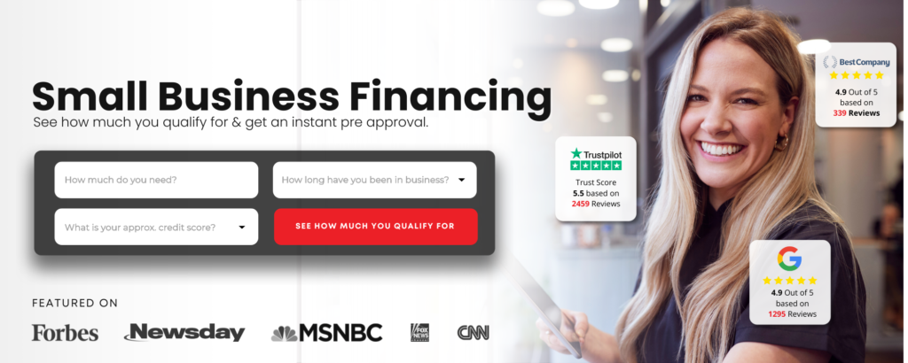

Working capital for seasonal businesses comes down to one core move: securing flexible funding before the slow season hits, not after the bank account runs dry. A revenue-based line or short-term working capital loan can bridge the gap between your slow months and your next busy cycle — so payroll, inventory, and overhead stay covered without panic.
Here is what you need to know to plan ahead, protect cash flow, and keep your business running through the off-season.
Why Seasonal Businesses Face a Different Cash-Flow Problem
Most cash-flow advice is written for businesses with steady, predictable revenue. Seasonal businesses — landscapers, HVAC contractors, holiday retailers, beach-town restaurants, tax preparers — do not have that luxury. Revenue spikes hard in peak months, then drops off a cliff.
The problem is that your fixed costs do not follow that same curve. Rent, insurance, equipment leases, and employee wages keep coming every month whether your revenue does or not.
That mismatch is what creates a working capital gap. You are not failing — you are just running a business model that requires intentional cash-flow management.
The Real Cost of Waiting Until You Need Money
Many small-business owners wait until the slow season is already underway before looking for funding. By then, the options shrink fast.
- Banks want to see consistent monthly revenue. If you apply mid-slow-season, your trailing months look weak and approval becomes harder.
- Emergency borrowing costs more. When you need money now and have fewer options, you take whatever terms are offered.
- Cash-flow stress leads to bad decisions. Cutting your best employee, skipping a marketing push right before peak season, or dipping into personal savings — these decisions compound.
The businesses that manage seasonality well do one thing differently: they secure working capital during their strong months, when the numbers look best.
What Working Capital Actually Covers
Before you apply for anything, get clear on what you need the money to do. Working capital for seasonal businesses typically covers one or more of the following:
Payroll and Labor Costs
Keeping key employees year-round — even at reduced hours — protects your ability to scale back up fast when the busy season returns. Losing your best crew members to a competitor during the off-season is a real risk that a small working capital cushion can prevent.
Inventory and Pre-Season Orders
Many seasonal businesses need to place inventory orders months before revenue arrives. A lawn care company buys fertilizer and equipment in late winter. A boutique retailer buys holiday merchandise in August. Working capital covers those purchases so you are ready when customers show up.
Fixed Overhead
Rent, utilities, insurance, software subscriptions — these do not pause because business slowed down. A working capital line ensures these basics stay current and you do not fall behind on obligations that could damage your credit or your operations.
Marketing Into the Next Peak Season
The slow months are actually the right time to invest in marketing. Running ads, building your email list, or launching a promotion ahead of your busy season can dramatically increase what that peak season produces. Working capital makes that investment possible without draining reserves you do not have.
How to Think About the Right Amount to Borrow
A rough formula that works for most seasonal businesses:
- Add up your fixed monthly costs. Rent, payroll for essential staff, insurance, utilities, and any recurring obligations.
- Multiply by the number of slow months. If your off-season runs four months, that is four times your fixed monthly costs.
- Add any pre-season inventory or marketing budget. These are the growth investments that require upfront cash before revenue flows in.
- Subtract your expected slow-season revenue. Most seasonal businesses still generate some income in off months — subtract that from the total.
That number is your working capital gap. It is the amount you need to either have in reserve or access through financing.
Funding Options Worth Knowing
Not every funding product is built for seasonal revenue patterns. Here is a quick breakdown of what tends to work — and what tends to create problems.
| Funding Type | Good Fit for Seasonal? | Notes |
|---|---|---|
| Traditional Bank Loan | Often not | Long approval timelines; revenue averages may not reflect seasonal peaks |
| SBA Loan | Sometimes | Strong rates but slow process; good if you plan 3–6 months ahead |
| Revenue-Based Financing | Strong fit | Repayment tied to revenue — lower payments in slow months |
| Business Line of Credit | Strong fit | Draw only what you need; pay interest on what you use |
| Invoice Financing | Situational | Only works if you have outstanding invoices to leverage |
Revenue-based financing and flexible credit lines tend to be the best tools for businesses with uneven monthly revenue. The repayment structure adjusts to how your business actually performs rather than demanding the same fixed payment every month regardless of what came in.
When to Apply and What Lenders Look At
Apply during your peak season or shortly before the slow season begins — when your recent revenue history is strongest. Lenders look at bank statements, monthly revenue, and time in business. A soft credit pull is often enough to check your rate without affecting your score.
You do not necessarily need perfect credit. Funding platforms that send your application to multiple lenders — rather than a single bank — give you more options and better odds, especially if your credit score is in the 500s.
ROK Financial works this way: one application reaches multiple lenders who compete for your business, with options ranging from $10,000 to $500,000 and funding in as fast as 24 to 48 hours. A 500+ credit score may qualify, and the initial rate check is a soft pull.
How to Manage Working Capital Once You Have It
Getting funded is step one. Using it well is what separates businesses that grow from the ones that borrow in circles.
- Keep the working capital separate. Do not commingle it with your operating account. Move it to a dedicated account and draw from it intentionally.
- Set a monthly draw schedule. Treat it like a slow-season paycheck — draw the fixed cost amount each month rather than pulling everything at once.
- Start repayment as soon as revenue recovers. Paying down early when peak season kicks back in reduces total interest cost and frees up the line for next year.
- Track what the capital actually funded. At the end of the off-season, review what the money covered. That data helps you plan the right amount for next year.
The Bigger Picture: Treating Slow Months as a Strategy, Not a Survival Test
The businesses that consistently outperform their competitors in peak season are usually the ones that invested intelligently in the off-season. They kept their best people. They bought inventory early at better prices. They ran marketing when competitors went quiet and showed up top-of-mind when customers were ready to buy.
That level of off-season execution requires capital. It is not a luxury — it is a competitive advantage.
If you are heading into a slow stretch and want to understand what you may qualify for before the crunch hits, ROK Financial lets you check your options with one application and a soft pull — no commitment required to see where you stand.
JWAT Enterprises Inc may earn a commission if you apply through these links, at no cost to you. JWAT is not a lender. Not financial advice.

ROK Financial: One Application, Multiple Lenders Competing for Your Business
ROK Financial connects you to a marketplace of lenders with one soft-pull application — with revenue-based options from $10K to $500K and funding in as little as 24–48 hours, it may be the fastest bridge between your slow season and your busy one.
Check Your Rate with ROK Financial →Affiliate disclosure: JWAT Enterprises Inc may earn a commission if you apply through links on this page, at no cost to you. JWAT is not a lender. Not financial advice.
← Back to Blog